how to
Change the architecture safely
Generated from docs/design/change-guide.md. Edit the canonical source, not this page.
This is the “where does my change propagate?” guide. It is deliberately impact-first: find the row matching the semantic change, then follow the required contracts and tests. The active milestone packet still governs scope and acceptance.
T1 — chart: change propagation
Section titled “T1 — chart: change propagation”

{kind=link}
Not every change touches every box, but skipping a downstream representation is a common source of “renders correctly, cannot be inspected or resumed” defects.
T2 — map: impact matrix
Section titled “T2 — map: impact matrix”| Change | Primary implementation | Required adjacent work | Minimum evidence |
|---|---|---|---|
| add/edit L0 scene field | l0_scene/schema.py, lower.py, EDN assets |
stable primitive/material ordering, compatibility factory/registry if public | schema rejection + lowering + pinned render/differential tests |
| add graph operator | l1_graph/operators.py, typed definition/catalog |
EDN topology, semantic parameter classification, selected-terminal/resource tests, Inspector identity | load/compile/cook/cache/undo tests on every declared backend |
| add graph state edge | delayed input + state.*_delay topology |
two-phase commit, seed/resume, reset semantics | same-frame cycle rejection + rollback + resume tests |
| change direct proposal/reuse | l2_kernels/estimator.py, lights/BSDF |
retained direct planes, replay candidate/update record, all backend stages | direct hashes + discrete exactness + one-shadow-ray assertion |
| change path contribution or shift | l2_kernels/path.py and reuse math |
compact/transient SoA, failure enums, generalized balance, replay/capture | scalar statistics + reciprocal support/Jacobian + backend differential |
| add material lobe/event | BSDF/material and path topology | density/mass convention, lobe SoA tags, Slang/Taichi dispatch, Inspector | isolated sampling tests + scalar/backend path topology and radiance |
| add retained buffer | l3_backend/outputs.py semantic buffer/view |
every backend writer, false-color view, NPZ codec, replay/capture if durable | shape/dtype/default + zero-copy view + exact round trip |
| add backend-native stage | backend module/kernels | ownership/barriers, compact payload completeness, performance benchmark | discrete differential first, then radiance and warm benchmark |
| add CLI/UI estimator control | shell/UI config construction | pipeline operator parameter and canonical graph, reset classification, capture schema if reproducible | CLI parse + graph equivalence + UI smoke/wiring test |
| change capture schema | capture spec/codecs/archive reader | canonical hash, migration/back-compat, playback, resume | v2 readability + new round trip + interrupted commit/resume |
T2 — map: a safe vertical slice
Section titled “T2 — map: a safe vertical slice”(implement-change semantic-intent (define-domain-contract {:types ... :math ... :failure-states ... :rng-streams ... :ray-work ...}) (prove-in-scalar-oracle) (declare-logical-graph-identity) (extend-stable-soa-abi) (lower-to-optimized-backends) (retain-and-record-the-decision) (version-persistence-if-needed) (verify [:unit :scalar-regression :backend-discrete-differential :radiance-differential :replay-roundtrip :capture-compatibility]))This order keeps the mathematical contract reviewable before device lowering and gives optimized backends a concrete discrete oracle.
T3 — territory: worked change paths
Section titled “T3 — territory: worked change paths”Add a direct candidate technique
Section titled “Add a direct candidate technique”- Define its sampling distribution and target/PDF conversion in the canonical emitter-area domain.
- Allocate a stable RNG purpose/stream. Preserve all existing stream identities and prefix draw order when the technique is disabled.
- Extend the direct candidate proposal kind and replay record.
- Stream the candidate through the existing reservoir update; do not add a second final visibility query.
- Add SoA representation only for state required after proposal/final selection.
- Port identical replacement comparisons and payload writes to Taichi and Slang.
- Prove old NEE/RIS hashes unchanged when the new technique is off, then add statistical and differential tests when on.
Add a path mapping
Section titled “Add a path mapping”- State source and target domains, forward and inverse support, target functions, and every Jacobian factor.
- Add a stable typed failure for each expected unsupported case.
- Implement scalar forward and inverse diagnostics before generalized balance.
- Retain common-origin lineage if mappings may compose temporal→spatial.
- Extend compact selected payload only with durable lineage; put full intermediate vertices in the transient path-vertex SoA.
- Record replay/reconnection/visibility work separately.
- Add reciprocal Jacobian, support, correction-term, moving-camera, and chained- mapping tests before backend performance work.
Add a graph operator
Section titled “Add a graph operator”- Choose whether it transforms data, describes a render pipeline, owns delayed state, or projects display/inspection. Keep each definition single-purpose.
- Define strict
ValueSpecports andParameterSpecvalues; bump the operator version for incompatible semantics. - Register supported backends explicitly.
- Classify every parameter as render-semantic or display-only.
- Add the node/link to versioned EDN and ensure semantic hash stability across a load/save round trip.
- Verify pruning when its terminal is unselected and transitive dirty propagation when an input changes.
- If backend-fused, retain the authored node identity and meaningful timing/resource projection in the compiled inspector.
Add a durable retained field
Section titled “Add a durable retained field”- Name its semantic meaning, scalar dtype, shape, invalid/default encoding, and owner.
- Append compatible SoA storage and initialize every execution path, including empty reservoirs and rejected shifts.
- Expose it through a typed zero-copy
FrameOutputsview. - Write it in scalar, Taichi, and Slang or explicitly reject unsupported modes.
- Add it to immutable history only if reuse consumes it.
- Add replay/Inspector projection only if it explains a rendered decision.
- Version the capture codec if absence cannot be represented by a safe default; retain v2 read compatibility.
Test atlas
Section titled “Test atlas”Use rg to locate the closest existing test before creating a new test family. The
suite is organized by contract more than by source file.
| Contract | Typical test focus |
|---|---|
| L0 and assets | strict schema, source-located errors, duplicate keys, stable lowering |
| L1 graph | EDN round trip, type errors, terminal pruning, lifetimes, cache/dirty behavior, delays, undo/redo |
| direct estimator | deterministic WRS, MIS measure, one shadow ray, temporal/spatial correction |
| path estimator | contribution prefix, support failures, lineage, Jacobians, exact/biased reuse |
| backend | scalar/Taichi/Slang discrete and radiance differential, retained plane parity |
| debug | selected-pixel replay equality, geometry/path-tree records, observer work invariance |
| capture | exact codecs, job hash, atomic commit, resume history, v2/v3 compatibility |
| UI/shell | config wiring, reset semantics, smoke rendering, backend-free playback |
Primary command:
uv run python -m pytest -qUse the narrowest relevant test during iteration, then run the full suite for changes that cross estimator, ABI, graph, or persistence boundaries.
Review checklist by invariant
Section titled “Review checklist by invariant”Determinism
Section titled “Determinism”- Is every new random decision keyed by stable semantic coordinates?
- Does disabling the feature preserve prior RNG keys and draw order?
- Are candidate prefixes deterministic under cap changes?
- Do recording and inspection leave RNG counters unchanged?
Memory and scheduling
Section titled “Memory and scheduling”- Is retained device-facing state scalar SoA?
- Does each reuse stage read immutable source storage?
- Is each target pixel written only by its own work item?
- Are barriers explicit between post-temporal freeze and spatial reads?
Estimator correctness
Section titled “Estimator correctness”- Are domain, measure, PDF/mass, target function, support, and Jacobian named?
- Is aggregate
Mpreserved through reuse and caps? - Does direct evaluation still pay exactly one final shadow ray?
- Are exact generalized-balance inverse terms complete?
Observation and persistence
Section titled “Observation and persistence”- Can the final choice be explained from retained/recorded state alone?
- Are disclosed ray counts split by trace, replay, reconnection, and visibility?
- Does capture encode the field without pickle and read older archives?
- Can resume restore state only from a fully committed frame?
Graph semantics
Section titled “Graph semantics”- Is the operation represented in the authored network at the correct granularity?
- Does its semantic hash change when execution meaning changes, but not for layout?
- Are selected-terminal reachability and cache invalidation correct?
- Is cross-frame state an explicit transactional delay?
Common shortcuts that fail
Section titled “Common shortcuts that fail”| Shortcut | Why it fails | Correct boundary |
|---|---|---|
| use a global/stateful RNG in a kernel | scheduling changes the sequence and replay cannot address a draw | counter RNG keyed by semantic coordinates |
| mutate neighbor reservoirs in place | spatial result becomes order-dependent and needs synchronization | immutable ping source, write self |
| trace again for the Inspector | observer changes work and may disagree with rendered choice | typed record from estimator + exact keyed replay |
| store an object array/pickle | breaks device ABI, safety, and long-lived archive compatibility | explicit scalar planes and typed codecs |
| hide history inside an operator executor | graph cannot schedule, reset, undo, or resume it transactionally | explicit delay ports/cells |
| infer payload from final radiance | many estimator states map to the same RGB | author complete selected payload during execution |
| relax all numeric tolerances after one GPU mismatch | masks control-flow and discrete divergence | exact discrete comparison, scoped numeric tolerance |
| call host-orchestrated PT reuse “native” | misstates active M20 architecture and performance ownership | report native legs and host correction/reduction separately |
Source-of-truth handoff
Section titled “Source-of-truth handoff”Before implementation, check ROADMAP.md, TODO.md, and the active execution packet. After implementation, update the authoritative status first, then these descriptive maps, the conceptual atlas, and any generated artifacts. Documentation should state what is executable now and label future design explicitly.
MIT licensed · Documentation structure follows Diátaxis · Third-party course material is linked, not redistributed.